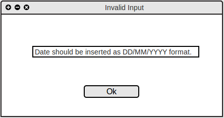
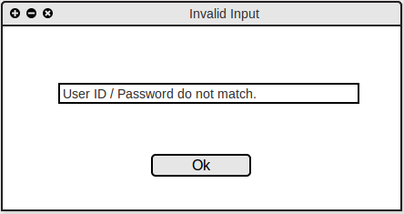
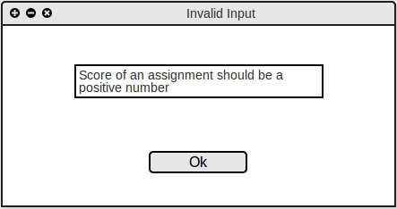
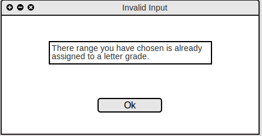

2.8. Error Conditions
If the user enters an invalid data in or leaves a filed empty, one of the following error messages is shown to the user.
Figure 2.9 A shows the message shown to the user if the user does not enter the date is specified format.

Figure 2.9 A: Invalid Date Message
Figure 2.9 B shows the message shown to the user if the combination of Username/Password is not found in the datebase.

Figure 2.9 B: Invalid Username/Password Message
Figure 2.9 C shows the message shown to the user if the user has entered a negative number for score of an assignment.

Figure 2.9 C: Invalid Score Message
Figure 2.9 D shows the message shown to the user if the user has entered a range for grading scheme that has already been assigned to another range.

Figure 2.9 D: Invalid Grading Scheme Message
Prev: File/Edit
| Next: edit
| Up: functional
| Top: index